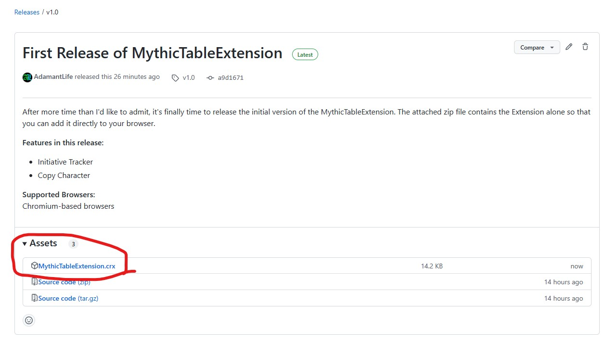
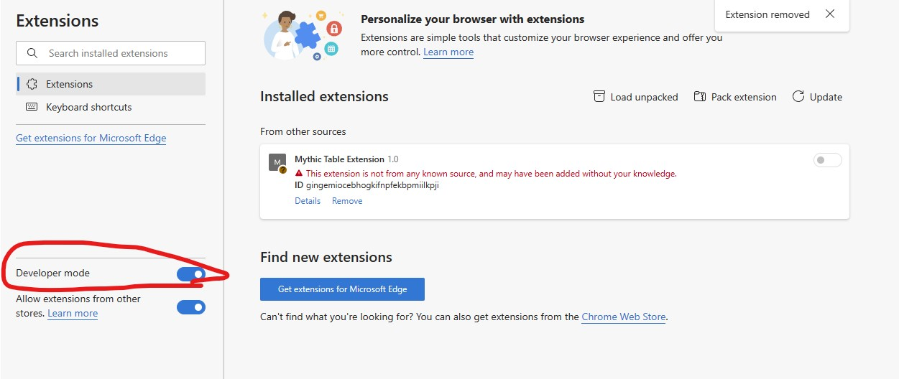

Installation
- Download the crx file from the current Release Version
- Alternatively, download or clone the git repo and use the contained copy of the Extension
- If you want to develop additional features or fix bugs, create a fork and clone your own fork

- Navigate to your browser's Extension Manager
- As this Extension is not available via a store, you'll need to enable Developer Mode in order to install it

- To add the extension:
- If you are using the crx file, you should be able to drag-and-drop the file directly onto the Extension page
- If you downloaded/cloned the repo: unzip it, click the "load unpacked" button, and navigate to the unzipped folder and select the Extension's folder